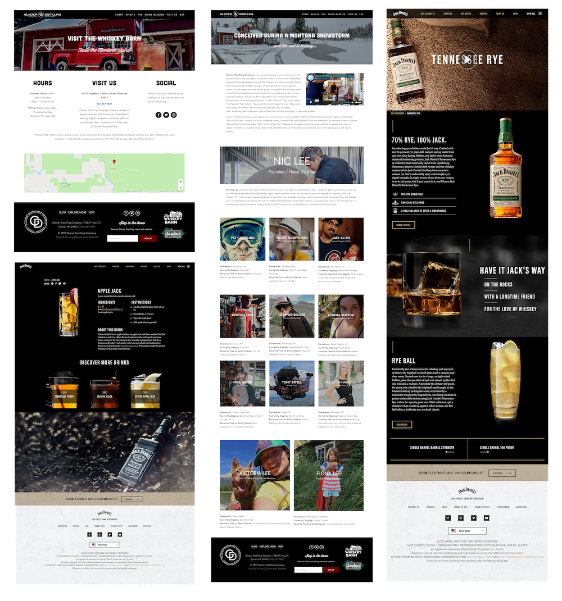
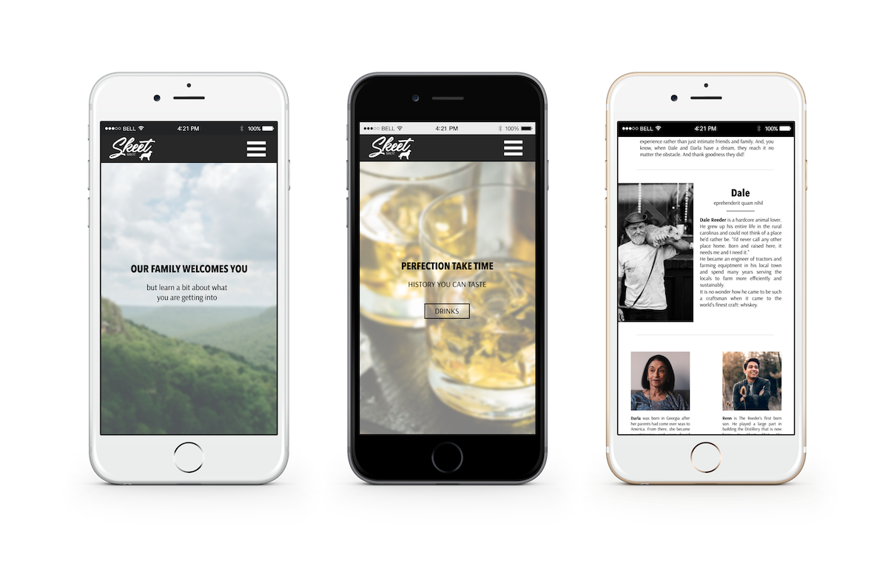
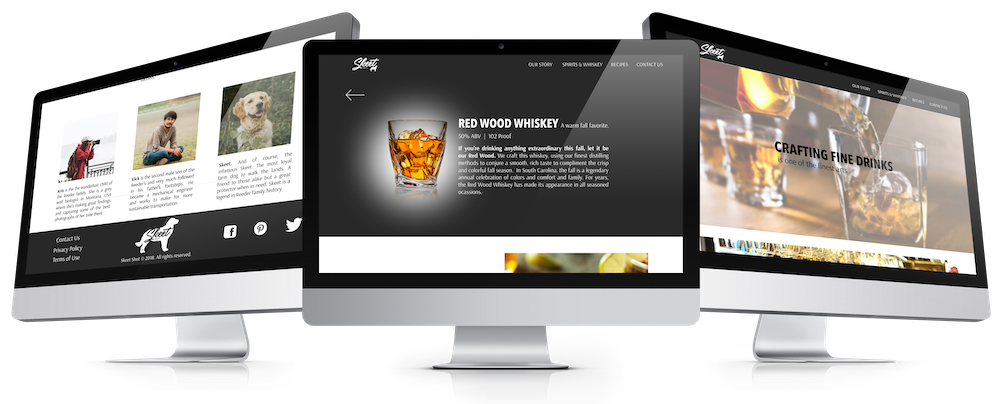

A collection of a southern family's distillery, Skeet Shot
Distillery. This site is a residence of their crafts,
recipes, family biographies and communication.
When given the task of designing the internet-interior of
the Distillery's home, it was clear that the atmosphere
should convey family, collectiveness and, of course, the
original Skeet.
Being unfamiliar with distilleries in general to creating a
site accommodating to all users, I heavily researched current
distillery sites such as Jack Daniel's and the locals like
Glacier Distillery. Using the current market as a template, I
was able to create a sitemap to successfully portray the Skeet
Shot family, business and friendliness.
I found the basic milestones of distillery sites to be a
hierarchy. The utmost being the general type of liquor to the
drink itself and specifics. It was also important to include
drink recipe ideas and, in this case, the history of Skeet
Shot Distillery and the family behind it.
 Above are current market distillery sites that helped me conjure Skeet Shot's.
After analyzing the market sites it was vital to include the following in Skeet Shot's site.
The design was a lot of fun to create after the userflows and features were established. The site became a visual collection of Skeet's legend.
 